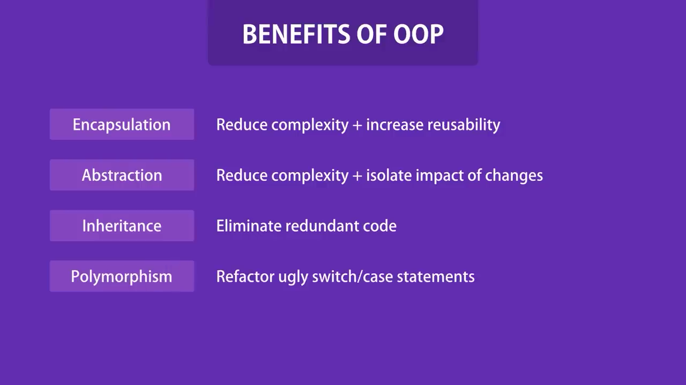
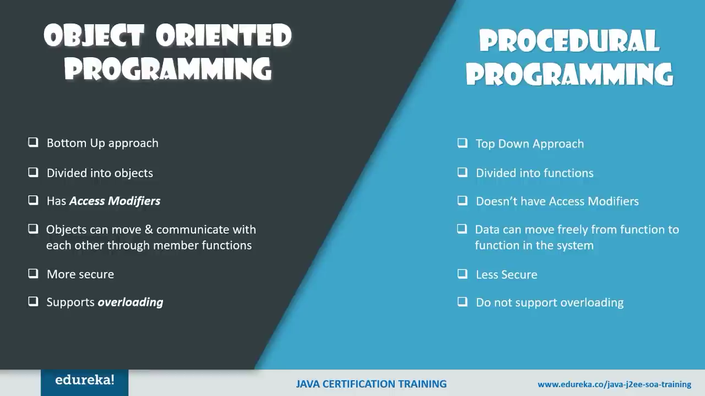
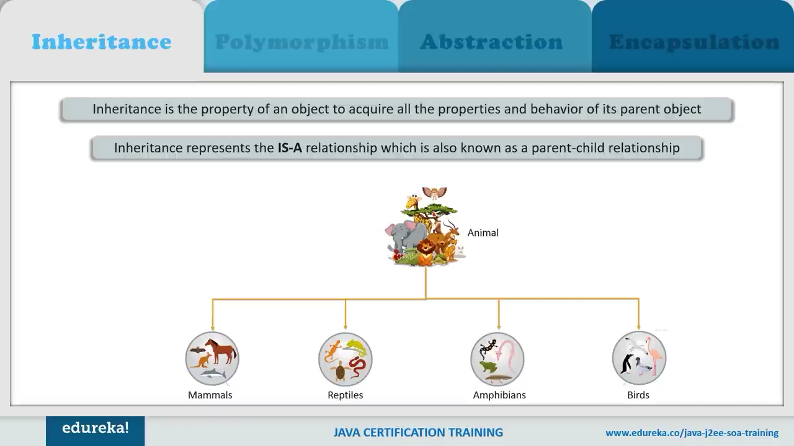
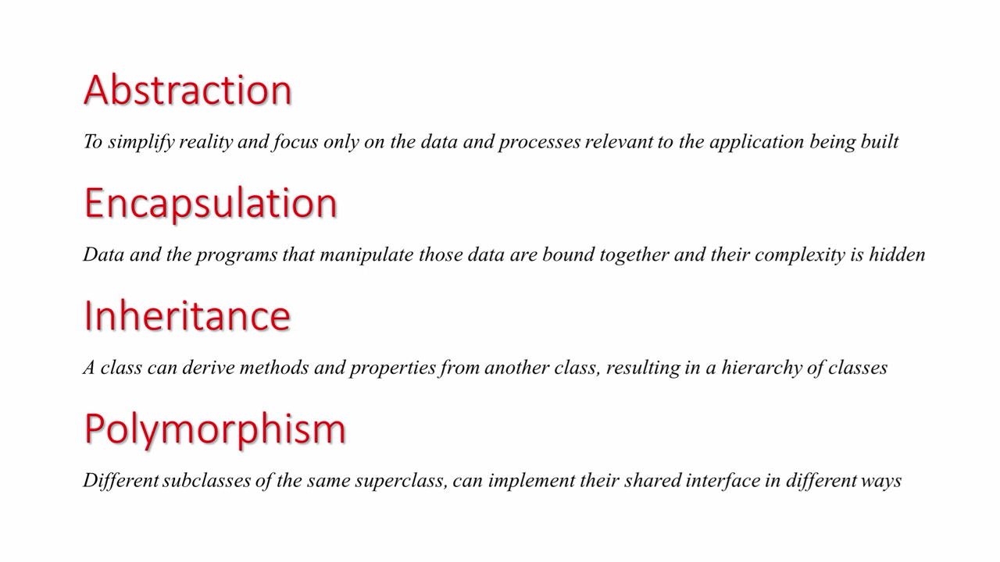
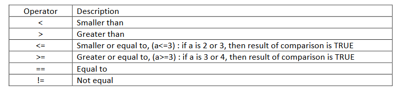

Java refers to a number of computer software products and specifications from Sun Microsystems (the Java™ technology) that together provide a system for developing and deploying cross-platform applications.
When speaking about OOP one has to mention:
Humans manage complexity through abstraction. For example, people do not think of a car as a set ofte ns of thousands of individual parts. They think of it as a well-defined object with its own unique behavior. This abstraction allows people to use a car to drive to the grocery store without being overwhelmed by the complexity of the parts that form the car. They can ignore the details of how the engine, transmission, and braking systems work. Instead they are free to utilize the object as a whole. A powerful way to manage abstraction is through the use of hierarchical classifications. This allows you to layer the semantics of complex systems, breaking them into more manageable pieces. From the outside, the car is a single object.
An object encapsulates the methods and data that are contained inside it .the rest of the system interacts with an object only through a well defined set of services that it provides
   a class is a template for an object, and an object is an instance of a class. Because an object is an instance of a class, you will often see the two words object and instance used interchangeably
When you define a class, you declare its exact form and nature. You do this by specifying the data that it contains and the code that operates on that data. A class is declared by use of the class keyword. The classes that have been used up to this point are actually very limited examples of its complete form. Classes can (and usually do) get much more complex. The general form of a class definition is shown here:
The data, or variables, defined within a class are called instance variables. The code is contained within methods. Collectively, the methods and variables defined within a class are called members of the class. In most classes, the instance variables are acted upon and accessed by the methods defined for that class. Thus, it is the methods that de can be used.
public class Example1{
A variable is a place where the program stores data temporarily. As the name implies the value stored in such a location can be changed while a program is executing (compare with constant).
class Example2 {Predicted Output:
var2 contains var1 / 2: 512
Predicted Output:
*Note if you try to execute the above program you will get an error (division by zero). To be able to
execute it, first comment the last two statements, compile and then execute.
2 is a factor of 10
Predicted Output:
First Line
Second Line
A B C
D E F
Predicted output:
Original value of var: 10
Original value of x: 10.0
var after division: 2
x after division: 2.5
The Boolean data type can be either TRUE or FALSE. It can be useful when controlling flow of a program by assigning the Boolean data type to variables which function as flags. Thus program flow would depend on the condition of these variables at the particular instance. Remember that the output of a condition is always Boolean
class Example10 {Predicted output:
b is false
b is true
This is executed
10 > 9 is true
Introducing Control Statements
class Example11 {Predicted output:
c is a negative number
c is a positive number
The ‘if’ statement evaluates a condition and if the result is true, then the following statement/s are executed, else they are just skipped (refer to program output). The line System.out.println() simply inserts a blank line. Conditions use the following comparison operators:
 class Example12 {Predicted Output:
This is count: 0
This is count: 1
This is count: 2
This is count: 3
This is count: 4
Done!
The following simple programs, illustrate how to avoid programming errors by taking care where to initialize variables depending on the scope.
class Example16 {Predicted Output:
x and y: 10 20
x is 40